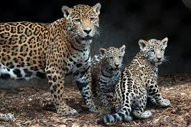

Hello my fellow readers you wil see all types of cool amimals and learn many things about thing.Animals are very significant they make the world look great.
Im going to start off with some pictures and explanations about the animals facts and other things i believe you should know about the animal.

Jaguars are magnificent cats they can be found in north,south,and central america. Jaguars are the biggest cats in america and the third largest in the world
pretty much unique some people would say. The jaguar is about 4 to 6 feet and the tail is 2 feet long. Male jaguars can be heavier than female jaguars
males weigh about 126 to 250 pounds and females are 100 to 200 pounds.They live in places like forrest and woods or can be found in deserts in arizona.
Jaguars are creative when it comes to catching fish they dip their tales in the water to lure the fish in much like a fishing line. Jaguars mainly spend time with their own kind
if their mating or taking care of their cubs. Females can carry their cubs around for 100 days and they give birth to 1 to 4 cubs. The jaguars can live up to 12 years.
The population of jaguars is 15,000 that remain in the wild.Thats all about jaguars.
Black mamba a good looking snake but its very dangerous the black mamba is africas largest venomous snake. The snake is a brown and grey color it is named because of the black lining around his its mouth the black mamba is one of the fastest snakes in the world. The black mamba is an agile species that hunt warm blooded prey only.Black mambas reside in South and East Africa’s savannas, rocky hills and open woodlands
 Black mamba a good looking snake but its very dangerous the black mamba is africas largest venomous snake. The snake is a brown and grey color it is named because of the black lining around his its mouth the black mamba is one of the fastest snakes in the world. The black mamba is an agile species that hunt warm blooded prey only.Black mambas reside in South and East Africa’s savannas, rocky hills and open woodlands
Black mamba a good looking snake but its very dangerous the black mamba is africas largest venomous snake. The snake is a brown and grey color it is named because of the black lining around his its mouth the black mamba is one of the fastest snakes in the world. The black mamba is an agile species that hunt warm blooded prey only.Black mambas reside in South and East Africa’s savannas, rocky hills and open woodlands